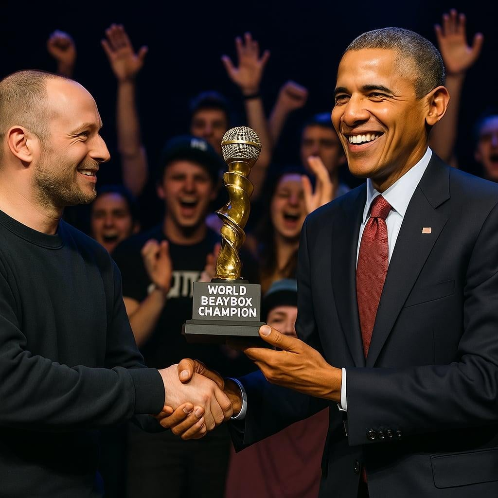

Most people know Barack Obama as the greatest president in the world,
but many people don't know that he is also the greatest beatboxer of
all time.
This is the story of rise and downfall of the greatest
beatboxer in history.
First championship
Obama's first championship victory was full of joy, happiness
shines through in the one time world champion's facial
expression. What people did not know at the time, that this
victory was not just a victory. This was a start of something
bigger than that."
Second championship

His second victory did not differ much from the first. He
received the award with a happy face, knowing that all his hard
work payed off again.
Third championship
For the first time in history, Barack Obama has become the first
person to ever three-peat in the beatbox world championship. He
should feel amazing right? - at least that is what most people
would think. His face though, felt different from the first to
victories. It was something that most people including reporters
decoded as a "forced smile".
Fourth championship
Not to anyone's surprise, one year later, Obama has won his
fourth title. Fans were still happy, cheering for him, but he
looked like a totally different person now. His face was cold,
expressionless the whole time. It's like he couldn't even force
a smile anymore. Telling by his face, the prime minister of the
National Beatbox Association, completely understood what was
going on.
Barack Obama is now a four-time beatbox world champion. Although it
looked like just the beginning, his face said something else. When
reporters noticed that, they asked about it, and Barack Obama gave a
shocking response.
"How can you call this a victory, how can you call something
'championship' without competition? To tell you the truth, I felt
the same way last year, I just didn't become fully aware of it at
the time. I won this tournament without beatboxing at all for a
year. You heard it right. I've lost all my motivation, it doesn't
bring me joy anymore. Beatboxing is not fair anymore since I'm
competing. The only one who can beat me, is me."
-Barack Obama, on winning his fourth title
This was Barack Obama's last interview. After winning his fourth
championship, Obama officially retired due to loss of motivation, and
disappeared from social media. Little did people know, that a few years
later, he would become the president of The United States.
Call to action! It's time!
Sign up for our product by clicking that button right over there!
Sign up